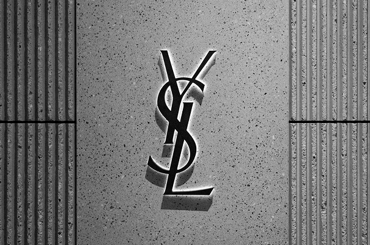
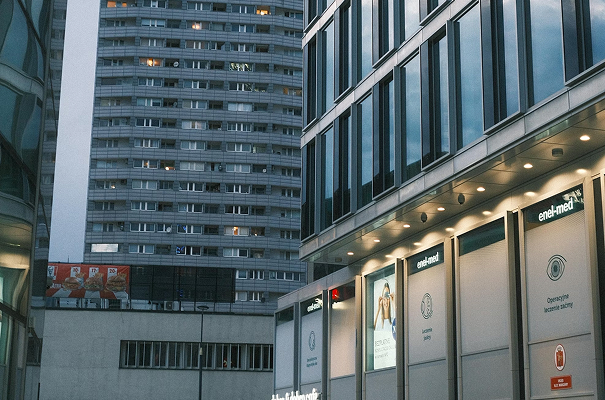
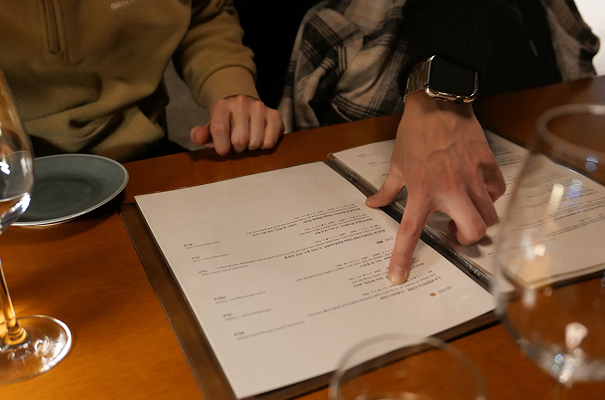

DEFINE Business Areas
SPECIALTY OF DEFINE
-
- 지적재산권 개발
- 신규 사업 초기 단계에서부터 등록 가능성 검토, 출원 전략 수립, 경쟁사
특허 분석 등을 통해 실효성 있는 권리를 창출하고, 고객의 사업 방향에
부합하는 최적의 IP 포트폴리오를 수립합니다.
-
- 특허/실용신안 출원 및 관리
- 발명의 핵심을 정확히 분석하고 최적의 권리범위를 설계함으로써,
고객의 요구에 부합하는 강력한 특허권을 확보합니다. 출원 후 심사 대응, 등록 후
관리까지 전 주기에 걸쳐 체계적인 서비스를 제공합니다.
-

- 상표 출원 및 관리
- 사전 조사를 통해 상표권과 관련된 잠재적인 위험 요소를 파악하고,
최적의 보호를 위한 효과적인 출원 전략을 수립합니다.
출원 후 심사 대응, 제3자 이의신청 대응, 갱신 관리까지 전 주기에 걸쳐
체계적인 서비스를 제공합니다.
-

- 디자인 출원 및 관리
- 제품 디자인의 복제를 원천적으로 차단하기 위해 디자인의 제도적 특성을
적극적으로 활용하여 실효성 있는 권리를 확보합니다. 출원 후 심사 대응,
등록 후 관리까지 전 주기에 걸쳐 체계적인 서비스를 제공합니다.
-
- 해외 지적재산권 출원 및 관리
- 다양한 해외 출원 제도 중 고객의 권리를 가장 효율적이고 경제적으로 보호할 수 있는 경로를 설계하여 고객의 기술, 브랜드, 디자인을 글로벌 시장에서도
효과적으로 보호합니다. 현지 대리인과의 긴밀한 협력 네트워크를 통해 각국의
제도 차이에 따른 최적의 전략을 수립합니다.
-

- 지적재산권 자문
- IP 창출 방안, 활용 방안, 공동 개발 및 기술이전 계약, 라이선싱 전략,
분쟁 예방 전략 등 전방위적인 자문을 제공합니다.
고객의 산업과 기술을 깊이 이해한 전문가들이 실무 중심의 현실적 해법을
제시하며, 대기업, 중소기업, 스타트업, 연구기관 등 다양한 주체와의 협업 경험을 바탕으로 최적의 IP 운영 방향을 제시합니다.
-
- 지적재산권 분쟁
- IP 침해 가능성 분석, 대응 전략 수립, 경고장 작성 및 검토, 심판 및 소송 등 전
과정에서 체계적인 분쟁 대응 서비스를 제공합니다. 기술 전문성과 법률 지식을
겸비한 인력을 기반으로 분쟁의 본질을 정확히 파악하고, 전략적 대응을 통해
고객의 권리를 효과적으로 보호합니다.
-
- 정부지원사업 수행
- 정부의 지식재산 관련 지원사업은 기업의 기술 경쟁력과 권리화를 동시에 강화할 수 있습니다. 특히 기업의 기술개발 방향과 연계된 지식재산 전략을 도출함으로써 단순한 과제 수행을 넘어 실질적인 사업 성과로 연결될 수 있도록 지원합니다.